「先别生成」的草稿节点 · 状态怎么显示（样张）
已拍板（2026-09-24）：① 节点 A 什么都不挂 · ② 任务按钮与面板一起改 · ③ 报价卡在等人同草稿 · ④ 生成中 / 排队中 / 失败一起收成普通节点那一套（「已停」保留）。
2026-09-25 落地时的差异：② 任务面板那一半由 #869 的任务面板样张接手（草稿不进任务列表，不是单独一组「草稿」）；④ 生成中 / 失败由 #870 做成普通节点画法，「已派出、还没轮到」仍是批次小标，待定。
截图全部来自真实应用（Windows，零额度回环供应商）。「改后」是在真实界面上盖样式拍的，布局就是现在的布局。
0 · 实查结论：没花钱，只是字说错了
Agent 按「先别生成」建草稿之后，盘上这个 Run 的真实状态：
Run 状态 draft
生成任务 0 个
付费门 0 道
账本 ¥0（预留 0 / 实付 0 / 在途 0）
供应商收到的生成请求 0 次
但画面上节点写着 「排队中 · 第 1/1」，右上角「任务」按钮变蓝、数字 1——读起来像已经在排队、要扣钱了。
同一个问题还出现在：报价卡已经弹出、你还没点「生成」的那一刻（节点也写「排队中」）；批次里被你勾掉的镜（也写「排队中」）；草稿一直不生成的话，任务按钮会一直亮着 1。
1 · 节点上显示什么（草稿、你还没点头）
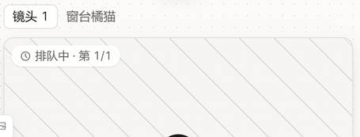
「排队中 · 第 1/1」
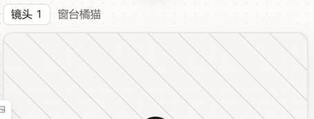
就是一个还没生成的普通节点
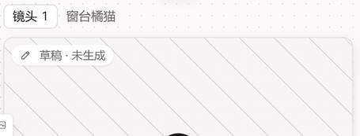
中性小签，不带时钟
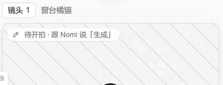
指向确认的地方
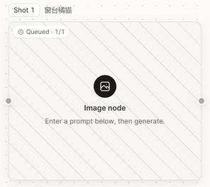
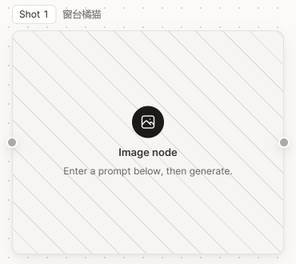
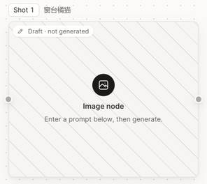
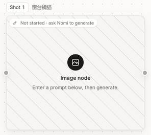
为什么推荐 A：没生成的节点本来就长这样（有提示词、有生成按钮），用户一眼就知道「什么都还没发生」。加字只是在解释一件不需要解释的事；C 还会指错路——节点自己的 ↑ 和画布底部「全部生成」也能开拍，不只跟 Nomi 说。
2 · 连带面：右上角「任务」按钮 + 任务面板
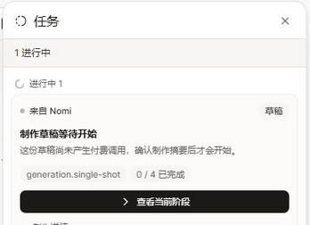
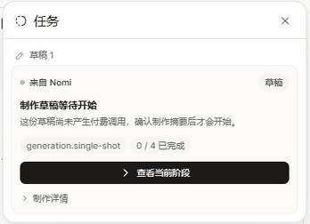
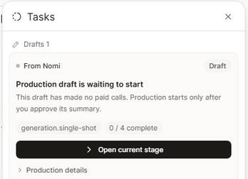
3 · 连带面：报价卡弹出、等你点「生成」的那一刻
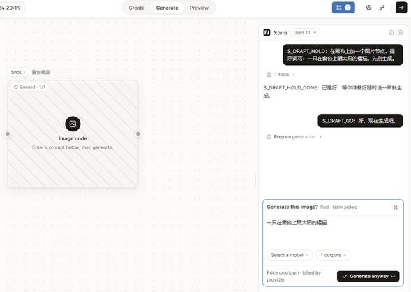
4 · 你点了之后（生成中）：跟普通节点用同一套画法
截图基准就是今天的 main。Agent 派出去的镜走的是 8-25 写的单独一层（模糊遮罩 + 大 N），9-08 普通节点换成像素网格动画时它没跟着换——所以同一个 App 里两种「生成中」。
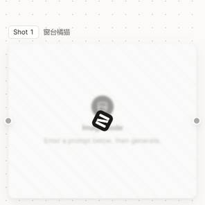
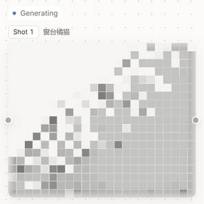
同一个做法一起收的：批次里已派出、还没轮到的镜（现在是左上角「排队中 · 第 n/N」小签）→ 普通节点的排队画法；失败（现在是一版简化红卡）→ 普通节点的标准错误卡，重试照旧走返工。只有「已停（预算触顶 / 急停）」是 Agent 批次独有的，保留原样。
顺带发现（不在这次改，单独开任务）
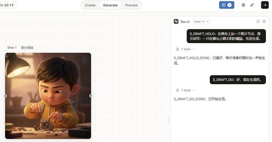